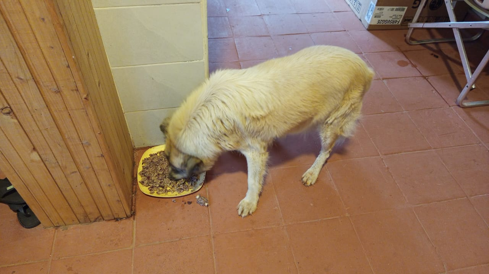

Mucheru World of Golf
Field engineering operations across Mucheru World of Golf on Thursday, 22nd October 2026 achieved extensive milestones across lateral pop-up sprinkler distribution, gravity drainage verification, teebox topsoil layering, reservoir sealing, and perimeter landscaping:
Irrigation Distribution & Earthwork Milestone
Under the joint supervision of Mr. Gichuhi and Ken, the site plumbing technician fitted saddle clamps onto HDPE pop-up sprinkler pipes across eight putting greens (Greens 6, 11, 12, 13, 14, 15, 16, and 17), with laborers immediately backfilling the perimeter trenches with soil. On Green 17, assembly of an electric solenoid control valve lateral began. In addition, actual PVC drainage pipes were tested with running water to verify smooth gravity discharge, while earthwork teams applied red soil across Teeboxes 10, 11, and 12, repaired Dam 2 liner connections, reconstructed Dam 3 embankment, and planted 2 boundary palm trees.
- HDPE Pop-Up Sprinkler Saddle Clamps Installation: The plumbing technician installed bolted saddle clamp fittings onto the HDPE pop-up sprinkler supply lines across eight putting greens (Greens 6, 11, 12, 13, 14, 15, 16, and 17), establishing dedicated riser connections for pop-up sprinkler heads around each putting surface collar.
- Sprinkler Pipe Trench Backfilling & Covering: Following saddle clamp placement and joint inspections, manual labor crews backfilled and covered the lateral perimeter trenches with soil across Greens 6, 11, 12, 13, 14, 15, 16, and 17, leaving vertical sleeves positioned flush for sprinkler riser fittings.
- Green 17 Solenoid Control Valve Setup Commenced: Work commenced on installing an electric solenoid control valve on the Green 17 irrigation lateral line, connecting the valve unit to branch piping inside the utility trench to prepare the green for automated zone watering.
- Direct Water Gravity Flow Testing in PVC Drainage Pipes: The drainage crew tested the drainage network by running actual water through the installed orange PVC pipes—advancing from previous clear hose water level calibration to direct hydraulic verification of positive gravity fall.
- Drainage Trench Leveling & Bed Gradient Shaping: Ground workers operated along the main drainage trench alignments with picks and shovels, trimming high points and leveling the trench bed to secure continuous, uninterrupted gravity flow toward discharge outlets.
- Teebox Red Soil Application (Tees 10, 11 & 12): Rich red topsoil was hauled, spread, and leveled across Teebox 11 and both launch platforms (men's and women's) at Teebox 12; initial red soil application commenced on Teebox 10, with spreading ongoing to resume tomorrow.
- Dam 2 Liner Seam Repair & Dam 3 Embankment Reconstruction: Githinji's crew returned to Dam 2 to repair another faulty polythene liner connection around the basin floor; Dam 3 water inlet inflow continued while crews reconstructed and raised the perimeter embankment to prevent surface groundwater from washing into the dam; and 2 palm trees were planted along the boundary fence.
18-hole putting green status audit showing the latest work completed and current condition for each green as of October 22, 2026:
| Green | Current Technical & Agronomic State | Milestone Status |
|---|---|---|
| Green 1 | HDPE irrigation pipes laid and fitted inside perimeter sprinkler trenches (Oct 18). | Sprinkler Pipes Laid |
| Green 2 | HDPE irrigation pipes laid and fitted inside perimeter sprinkler trenches (Oct 18). | Sprinkler Pipes Laid |
| Green 3 | HDPE irrigation pipes laid and fitted inside perimeter sprinkler trenches (Oct 18). | Sprinkler Pipes Laid |
| Green 4 | Pop-up sprinkler and irrigation perimeter trenches dug along marked chalk line (Oct 14). | Sprinkler Trenches Complete |
| Green 5 | Ready. Fully established mature championship putting green turfgrass under active pop-up sprinkler irrigation conditioning. | Ready • Established Turf |
| Green 6 Today | Saddle clamps installed on HDPE pop-up sprinkler pipes and perimeter trenches backfilled (Oct 22). | Saddle Clamps & Covered |
| Green 7 | Drainage outlet trench connecting green 7 to main canal dug and leveled by manual crew (Oct 15). | Outlet Trench Dug • Leveled |
| Green 8 | Pop-up sprinkler trenches digging completed around green perimeter (Oct 15). | Sprinkler Trenches Complete |
| Green 9 | Orange drainage PVC pipe connected and outlet trench leveled leading to main canal (Oct 15). | PVC Connected • Trench Done |
| Green 10 | Pop-up sprinkler trenches digging completed around collar and surrounds (Oct 15). | Sprinkler Trenches Complete |
| Green 11 Today | Saddle clamps installed on HDPE pop-up sprinkler pipes and perimeter trenches backfilled (Oct 22). | Saddle Clamps & Covered |
| Green 12 Today | Saddle clamps installed on HDPE pop-up sprinkler pipes and perimeter trenches backfilled (Oct 22). | Saddle Clamps & Covered |
| Green 13 Today | Saddle clamps installed on HDPE pop-up sprinkler pipes and perimeter trenches backfilled (Oct 22). | Saddle Clamps & Covered |
| Green 14 | Saddle clamps installed on HDPE pop-up sprinkler pipes and perimeter trenches backfilled (Oct 22). | Saddle Clamps & Covered |
| Green 15 Today | Saddle clamps installed on HDPE pop-up sprinkler pipes and perimeter trenches backfilled (Oct 22). | Saddle Clamps & Covered |
| Green 16 Today | Saddle clamps installed on HDPE pop-up sprinkler pipes and perimeter trenches backfilled (Oct 22). | Saddle Clamps & Covered |
| Green 17 Today | Installation of 1 solenoid valve commenced; saddle clamps installed on HDPE sprinkler pipes and covered (Oct 22). | Solenoid & Clamps Set |
| Green 18 | Pop-up sprinkler trenches dug; riversand applied and leveled across green surface (Oct 14). | Riversand • Sprinkler Trench |
18-hole championship teebox status audit tracking launch platform shaping, red soil leveling, and irrigation pipe installations as of October 22, 2026:
| Teebox | Current Technical & Earthwork State | Platform Status |
|---|---|---|
| Tee 1 | Launch platform surface grading and leveling actively refined to design elevation per new instructions (Oct 20). | Refined & Graded |
| Tee 2 | Platform surface grading and earthwork leveling further refined per updated instructions (Oct 20). | Refined & Graded |
| Tee 3 | Playing launch platform contoured, leveled, and refined per new instructions given today (Oct 20). | Refined & Graded |
| Tee 4 | Championship launch platform surface graded, contoured, and refined per new instructions (Oct 20). | Refined & Graded |
| Tee 5 | Playing platform surface actively graded and refined with red soil per new instructions (Oct 20). | Grading & Refining |
| Tee 6 | Trench excavated through platform to lay HDPE irrigation pipe connecting to Green 7 system (Oct 21). | Irrigation Trench Dug |
| Tee 7 | Both platforms actively graded, contoured, and refined with red soil per new instructions (Oct 20). | Refined & Graded |
| Tee 8 | Championship launch platform surface grading and contour refinement actively continued (Oct 19). | Grading & Refining |
| Tee 9 | Playing launch platform grading and contour refinement continued per new instructions (Oct 20). | Refinement in Progress |
| Tee 10 Today | Initial application of red soil commenced on launch platform; spreading ongoing, resuming tomorrow (Oct 22). | Red Soil Ongoing |
| Tee 11 Today | Red soil applied, spread, and leveled across playing launch platform to finished grade (Oct 22). | Red Soil Leveled |
| Tee 12 Today | Red soil applied across both men's and women's tee platforms; final leveling in progress (Oct 22). | Red Soil Applied |
| Tee 13 | Initial layer of red soil hauled, applied, and spread across platform surface (Oct 21). | Red Soil Applied |
| Tee 14 | Launch platform earthworks completely finished, shaped, and refined to final playing contour (Oct 7). | Finished & Refined |
| Tee 15 | Red soil hauled, spread, and leveled across platform to finished design elevation (Oct 21). | Red Soil Leveled |
| Tee 16 | Surplus red soil moved onto platform; launch terrace completely reshaped and leveled (Oct 5). | Platform Reshaped |
| Tee 17 | Red soil applied, spread, and leveled across platform terrace adjacent to Green 17 (Oct 21). | Red Soil Leveled |
| Tee 18 | Championship launch platform surface grading, red soil leveling, and refinement underway (Oct 16). | Grading & Refining |
Operations Agronomy & Engineering Synthesis
Course Agronomy & Earthwork Milestones: Teebox 11 and Teebox 12 (both men's and women's launch platforms) capped and leveled with rich red soil; Teebox 10 initial red soil application commenced with work resuming tomorrow; 2 boundary palm trees planted along the property fence.
Hydraulic & Irrigation Infrastructure: Saddle clamps installed on HDPE pop-up sprinkler pipes and trenches backfilled across 8 putting greens (Greens 6, 11, 12, 13, 14, 15, 16, 17); Green 17 lateral solenoid valve setup initiated; gravity water drainage tested directly through installed PVC pipes; drainage trenches leveled; Dam 2 liner joint connection repaired; Dam 3 embankment reconstructed and heightened to prevent groundwater inflow while water intake continues.
Field video documentation capturing Thursday, 22nd October 2026 operations at Mucheru World of Golf: manual application and leveling of red soil across Teeboxes 10, 11, and 12, plumber installing saddle clamps on HDPE pop-up sprinkler pipes and trench backfilling across 8 greens, setting up the electric solenoid control valve on Green 17, testing gravity drainage flow directly through PVC pipes, Githinji's crew repairing polythene liner connections at Dam 2, Dam 3 water inlet inflow and embankment reconstruction, and newly planted boundary palm trees.
Sequential photographic field documentation showing teebox earthworks, sprinkler lateral fittings, solenoid valve assembly, gravity drainage testing, dam repairs, and landscaping:

Aerial Drone View — Teebox 12 Platforms
Aerial overhead view showing the two Teebox 12 platforms capped with rich red soil, with the main platform fully covered and adjacent platform in progress.

Ground View — Teebox 12 Red Soil
Ground perspective showing red soil applied across both men's and women's launch platforms at Teebox 12 alongside the boundary tree line.

Initial Red Soil Application — Teebox 10
Aerial drone photograph capturing laborers wheelbarrowing and spreading fresh red soil from stockpiles onto Teebox 10 platform during initial stages.

Aerial Drone View — Teebox 11
Overhead drone capture showing Teebox 11 launch platform completely surfaced and leveled with fresh red topsoil adjacent to the fence line.

Manual Spreading — Teebox 11 Platform
Ground labor crew with wheelbarrows and shovels actively distributing and leveling red topsoil across the Teebox 11 playing surface.

Aerial Overview — Course Platforms & Greens
High-altitude drone photograph displaying multiple teebox platforms layered with red soil, with adjoining putting green foundation visible.

HDPE Pipe Saddle Clamp Installation
Plumber's installation of a bolted saddle clamp fitting onto the black HDPE sprinkler pipe inside the red soil trench before backfilling.

Sprinkler Access Sleeve & Covered Trench
Vertical orange pipe sleeve housing the HDPE saddle clamp fitting after the sprinkler lateral trench was backfilled and leveled with soil.

Solenoid Valve Assembly — Green 17
Electric solenoid control valve unit connected to branch lateral piping alongside the orange PVC mainline inside the utility trench at Green 17.

Utility Trench Solenoid Assembly
Detailed perspective of the solenoid valve body and control wiring connected to the black HDPE irrigation lateral pipe in the trench.

Manual Drainage Trench Bed Leveling
Laborer using a pickaxe inside the excavated drainage trench to level the trench bed alongside orange PVC pipes for gravity water fall.

Main Gravity Drainage Trench Corridor
Excavated and graded drainage corridor showing orange PVC pipes laid along the trench berm ready for gravity flow alignment.

Dam 2 Liner Connection Seam Repair
Ground view of Dam 2 reservoir basin showing Githinji's crew working on liner seam repairs with a portable generator on the bank.

Aerial Drone View — Dam 2 Liner Inspection
Drone capture of Dam 2 reservoir showing laborers inspecting and repairing a faulty polythene liner connection around the central island.

Embankment Earthwork Berm — Dam 3
Ground perspective showing workers shaping and heightening the perimeter earth berm of Dam 3 to block groundwater runoff from entering the basin.

Aerial Drone View — Dam 3 Embankment
Overhead drone view showing laborers reconstructing and raising the earth embankment along the rim of the fully filled Dam 3 reservoir.

Boundary Fence Palm Tree Planting
One of the two palm trees planted along the course boundary fence line in pits prepared by the farm crew, backfilled with sand and soil.
Chaka Farms
Operations across Chaka Farms on Thursday, 22nd October 2026 maintained balanced production, animal wellness, and grounds maintenance across four coordinated supervisory sectors:
Farm Operational Highlights
Dairy production achieved 9.0 Litres gross harvest (6.0L morning + 3.0L evening), with 8.0 Litres dispatched for commercial sales (5.0L morning + 3.0L evening) and 1.0 Litre distributed for routine internal farm allocations (0.5L Gladys staff ration + 0.5L Maasai), achieving 100% quantitative accounting reconciliation strictly in Litres with zero discrepancy. Ken supervised the planting of 3 avocado seedlings and 2 lemon seedlings in the fruit garden in the holes dug yesterday. Willy oversaw daily canine unit care, including kennel sanitation, paw command drills, walking, exercise, and morning socialization with Bella and Zara. Margaret and Monica maintained thorough compound cleanliness and garden upkeep.
- 100% Reconciled Dairy Harvest in Litres: Daily dairy harvest yielded 9.0 Litres gross production, completely reconciled between 8.0 Litres commercial sales (5.0L morning + 3.0L evening) and 1.0 Litre internal disbursements (0.5L Gladys + 0.5L Maasai).
- Zero-Discrepancy Production Ground Truth: All milk metrics are recorded strictly in Litres; morning and evening commercial sales matched field dispatch logs exactly, with internal farm allocations fully accounted for.
- Fruit Garden Orchard Seedlings Planting: Ken supervised the planting of 3 avocado seedlings and 2 lemon seedlings into the deep planting pits prepared yesterday in the farm fruit garden, establishing watering basins around each tree base.
- Canine Unit Care, Training & Socialization: Willy directed kennel cleaning and sanitation, conducted paw ("pow") command training and obedience drills, supervised walking and exercising routines, and led morning socialization with Bella and Zara.
- Farm Compound Cleanliness & Maintenance: Margaret and Monica carried out comprehensive sweeping, garden maintenance, and compound cleanliness across farm corridors, sheds, and walking paths.
Official milking production and distribution reconciliation for Thursday, 22nd October 2026, accounting for all commercial sales and on-farm allocations:
| Category / Transaction | Morning Session | Evening Session | Daily Total |
|---|---|---|---|
| Gross Milk Harvested | 6.0 Litres | 3.0 Litres | 9.0 Litres |
| Commercial Milk Sales (Dispatched) | 5.0 Litres | 3.0 Litres | 8.0 Litres |
| Internal Farm Allocation — Gladys (Staff) | 0.5 Litres | — | 0.5 Litres |
| Internal Farm Allocation — Maasai | 0.5 Litres | — | 0.5 Litres |
| Internal Farm Allocation — Goat Kids (Weaned) | 0.0 Litres | 0.0 Litres | 0.0 Litres |
| Total Volume Accounted For | 6.0 Litres | 3.0 Litres | 9.0 Litres (100% Reconciled) |
Dairy Accounting & Farm Reconciliation Note
Total gross milk harvested of 9.0 Litres is 100% accounted for by 8.0 Litres dispatched for commercial sales (5.0L morning + 3.0L evening) and 1.0 Litre in routine farm allocations (0.5L Gladys + 0.5L Maasai). In accordance with reporting rules, milk volumes are recorded strictly in Litres (never kilograms), and Maasai is designated strictly as Maasai with zero discrepancy. All yields reconcile perfectly with zero variance.
Daily conditioning routines, behavioral discipline, fruit orchard seedling planting, and compound grounds maintenance conducted on Thursday, 22nd October 2026:
- Morning Pack Socialization with Bella & Zara: Willy conducted structured morning socialization sessions introducing Bella and Zara to pack routines, fostering calm, non-reactive behavior and social cohesion.
- Kennel Sanitation & Hygiene Maintenance: Daily thorough kennel washing and sanitation routines were carried out, ensuring pristine, clean stall environments and animal well-being.
- Paw Command Drills & Obedience Conditioning: Handlers conducted focused paw ("pow") command training alongside obedience drills, reinforcing responsive handler engagement and discipline.
- Canine Walking & Physical Conditioning: Routine walking and exercise sessions were completed, providing structured physical exercise and behavioral focus for the canine unit.
- Fruit Orchard Seedlings Planting: Ken supervised the planting of 3 avocado seedlings and 2 lemon seedlings in the fruit garden in the deep planting holes dug yesterday by the farm crew, backfilling with rich soil and setting up watering irrigation.
- Compound Cleanliness & Garden Upkeep: Margaret and Monica maintained compound cleanliness, sweeping corridors, tending garden beds, and ensuring tidy grounds throughout the farm.
Photographic field evidence documenting the newly planted fruit orchard seedlings and irrigation basins at Chaka Farms:

Fruit Seedling Planting & Irrigation
Newly planted fruit seedling in the garden lawn bed with dark nutrient-rich soil and a water supply pipe positioned for irrigation.

Fruit Orchard Expansion Beds
Fruit garden area showing excavated and backfilled planting pits with freshly planted fruit seedlings surrounded by mounded soil.
Honi Property
Operations across Honi Property on Thursday, 22nd October 2026 focused on reinforcing residential structural stability and restoring perimeter boundary security under the supervision of Mr. Gichuhi:
Structural Stabilization & Perimeter Security Milestone
Under the direct supervision of Mr. Gichuhi, site workers actively stabilized the residential building on site that was slanting on one side, erecting structural support bracing to secure upright alignment and structural integrity. In addition, perimeter maintenance crews inspected the boundary fence line and repaired cut fence wires, restoring continuous perimeter barrier protection.
- Structural Support Bracing for Slanting House: Mr. Gichuhi supervised the installation of structural support members and bracing to stabilize the residential building on site that had developed a slant on one side, arresting further movement and reinforcing its structural frame.
- Perimeter Boundary Fence Wire Repairs: Work crews inspected the property boundary fence line, fixing and repairing cut fence wires, re-splicing damaged sections, and re-tensioning strands to maintain secure boundary containment.
Kabete Residence
Operations at Kabete Residence on Thursday, 22nd October 2026 centered on civil substructure reinforcement, timber shutter formwork assembly, material delivery intake, and domestic pet welfare, overseen and shared by Njoki:
Substructure Reinforcement & Formwork Milestone
Civil construction crews advanced the SQ fireplace structure, installing film-faced marine board shutter formwork for the base slab and bending structural rebar beam cages and slab reinforcement steel. An Isuzu pickup truck delivered consignments of steel rebar rods and eucalyptus propping poles to the site, which were promptly offloaded and staged. Routine domestic care was maintained for resident pets, with Ajabu the Golden Retriever exercised on leash and fed indoors, and cats Reo, Mocha, and Aiko fed in the main house.
- SQ Fireplace Base Slab Shutter Formwork Setup: Carpenters assembled and set up the shutter formwork base slab at the staff quarters (SQ) fireplace, securing film-faced marine board plywood panels to form rigid containment for the concrete slab foundation.
- Beam Bars & Base Slab Steel Bending: Steel fixers bent and shaped reinforcement beam bars and slab steel rods according to dimensional specifications, assembling the steel reinforcement grid over the formwork bed.
- Offloading of Steel Rebar Delivery from Pickup: An Isuzu pickup truck delivered a consignment of steel rebar rods to the site; laborers offloaded and laid the long bars along the driveway for immediate bending and placement.
- Offloading of Eucalyptus Propping Poles Delivery: Workers offloaded a truckload consignment of eucalyptus propping poles delivered by pickup, staging them adjacent to the SQ construction zone for structural shoring.
- Domestic Pet Exercise & Nutrition Routine: Ajabu the Golden Retriever was taken on his daily leashed neighborhood exercise walk and fed indoors, while resident cats (Reo, Mocha, and Aiko) were fed together from bowls in the main residence.
Sequential photographic field documentation showing SQ fireplace formwork shuttering, rebar fabrication, material delivery offloading, and domestic pet care:

Formwork Shuttering Setup — SQ Fireplace
Carpenter fitting and securing film-faced marine board shutter formwork panels for the base slab foundation at the SQ fireplace.

Beam Rebar Fabrication — SQ Fireplace
Workers measuring and tying steel reinforcement beam bars over the plywood shutter bed for the SQ fireplace foundation slab.

Beam Cage Assembly for Shutter Base
Steel fixers in safety vests bending and assembling structural rebar beam cages resting on spacer blocks on site.

Base Slab Reinforcement Grid Alignment
Construction crew aligning and bending steel reinforcement bars across the wide timber shutter formwork bed for the SQ base slab.

Steel Rebar Delivery Offloading
Laborer offloading delivered long high-tensile steel reinforcement bars from the pickup truck bed onto the driveway.

Eucalyptus Propping Poles Offloading
Consignment of heavy timber eucalyptus propping poles delivered in the bed of an Isuzu D-Max pickup truck and offloaded for formwork shoring.

Ajabu Daily Leashed Exercise Walk
Ajabu the Golden Retriever on his daily leashed exercise walk along the paved residential driveway with handler.

Paved Walkway Stroll — Ajabu
Ajabu enjoying an outdoor leashed stroll along the decorative interlocking concrete block pathway at Kabete Residence.

Indoor Meal Routine — Ajabu
Ajabu the Golden Retriever eating his prepared meal indoors from his feeding plate in the residential living quarters.

Resident Cats Mealtime — Reo, Mocha & Aiko
Resident cats Reo, Mocha, and Aiko feeding together peacefully from individual stainless steel bowls in the dining corridor.